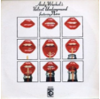
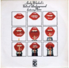

Beauty & Skincare
Ethical beauty: Here's what you need to know
skincare · 3 min read

You’ve probably heard about “cruelty-free”, “vegan” and “organic” cosmetic products. But what do these terms actually mean?
So, what does it actually mean when a product is "cruelty-free”
Cruelty-free products are products that have not been tested on animals at any stage of their process.
Some cosmetic companies use animal testing as a method to assess the safety of the chemicals and ingredients for a new product. Animal testing are performed most often on rats, mice, guinea pigs, and rabbits. The cruel things these animals have to go through include irritation of the skin and eyes to test chemicals, force-feeding lasting weeks or months to test health hazards, and widely condemned “lethal dose” tests, in which animals are forced to ingest products to see at what point ingestions of these chemicals lead to death.
At the end of a test, the animals are killed without pain or relief by asphyxiation, neck-breaking or decapitation. The whole process is unnecessary, and highly unethical.
But, what about products that claim to be cruelty-free, but still contain animal ingredients? Is a product still cruelty-free if an animal most likely had to die in order to retrieve those animal ingredients?
Sources: On animal testing: Humane Society. Cosmetics testing FAQ
On sustainable and ethical beauty: J. (2020, 14 februari). SUSTAINABLE AND ETHICAL BEAUTY: WHAT THESE TERMS ACTUALLY MEAN?
Vegan
Vegan products are products that are free of any animal ingredients or animal-derived ingredients.
These ingredients often found in cosmetic products include, but are not limited to, beeswax, honey, gelatin, carmine, lanoline, cholesterol, and different types of milk.
Unfortunately, not all products claiming to be “vegan” are cruelty-free. Next to being free of any animal ingredients, a product being “vegan” should also mean that it is cruelty-free. This is why transparency from a brand is important. If a company cannot or refuses to disclose such information on their products, it best to stay away from them.
Read more about vegan beauty products here.
Organic & Natural
Products that are free from any GMOs, manufactured herbicides, artificial fertilizers, artificial or synthetic colors, preservatives or chemicals.
Read more about organic and natural products here.
You might also like

fashion · 9 min read
The cost of fast fashion


 


Keep up with new posts!
Don't worry, only good stuff. No spam.